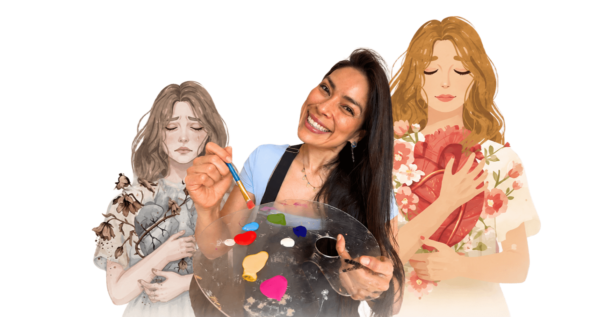
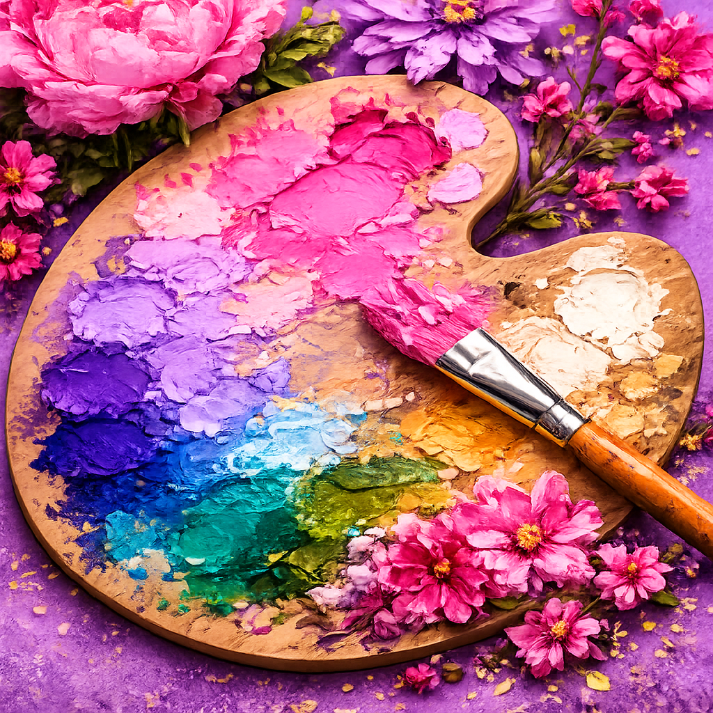
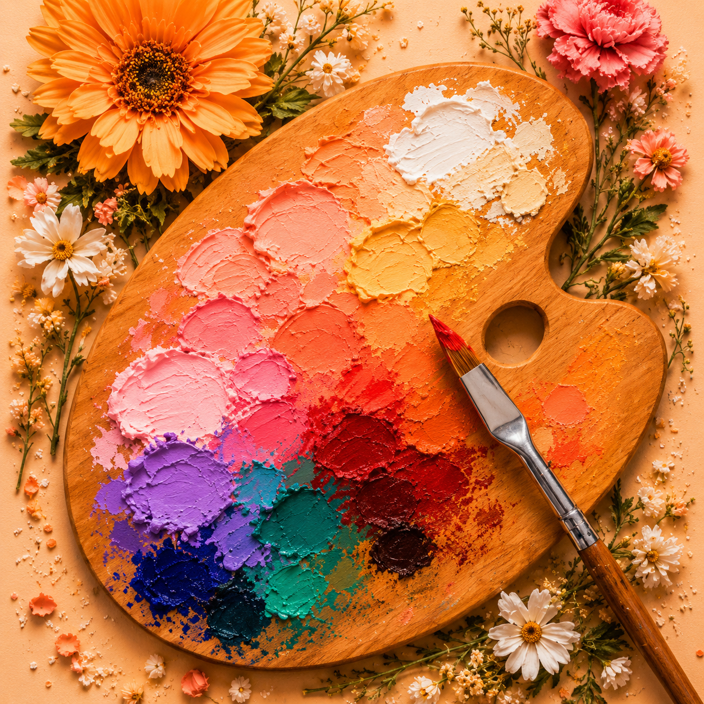
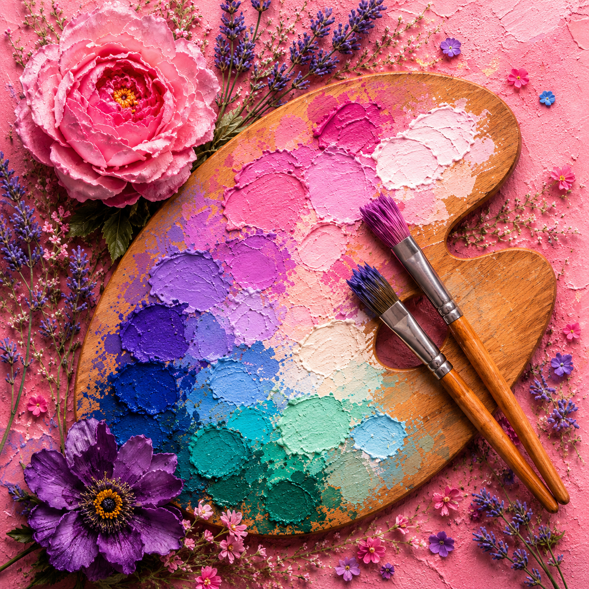
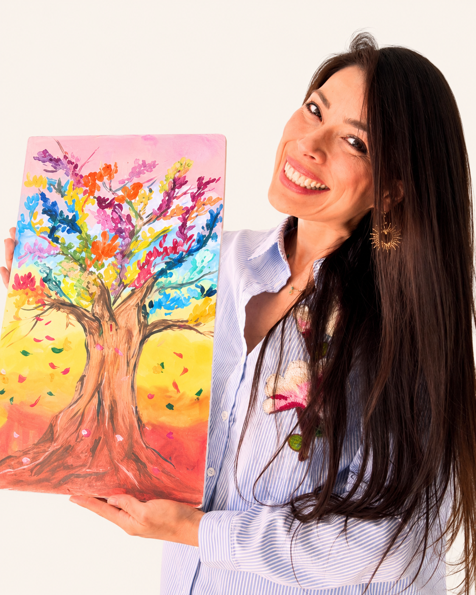

Vuelve a ti
a través del arte
Un espacio de sanación emocional, expresión y reconexión para mujeres que desean liberar lo que sienten y volver a sentirse en casa consigo mismas.
No necesitas
saber pintar Experiencias online
y presenciales Acompañamiento
amoroso Comunidad en Skool
saber pintar Experiencias online
y presenciales Acompañamiento
amoroso Comunidad en Skool

¿Esto es para ti?
o emociones acumuladas
y no sabes cómo expresarlas.
desconectada de ti misma
y quieres recuperar tu claridad interior.
un lugar amoroso,
creativo y profundo.
sentir paz, presencia
y conexión contigo.
acompañado, sin presión
y sin tener que hacerlo sola.
¿Qué es
Inner Bloom Art?
El arte no se utiliza para crear algo perfecto, sino como un puente para expresar, comprender y transformar lo que estás viviendo.
Conoce la metodología →Elige tu camino
Cada mujer vive un momento distinto.
Elige la experiencia que hoy
más te acompañe.

Cursos Online
Para sanar a tu ritmo desde casa, con acceso a materiales, meditaciones y comunidad.
Ver cursos
Taller Presencial
Una experiencia íntima y transformadora para reconectar contigo a través del arte.
Conocer taller
Test emocional
Responde un pequeño test y descubre qué proceso puede ayudarte según el momento que estás viviendo.
Hacer test
Hola, soy
Clau Flores
Inner Bloom Art nace de mi propio camino de sanación y del descubrimiento de que el arte puede ser un puente para volver a una misma.
Hoy acompaño a mujeres a reconectar con su esencia, liberar emociones y florecer desde adentro, en un espacio amoroso y seguro.
Conoce más sobre mí →¿Cómo empezar?
Elige la modalidad
que deseas
Online o presencial
Paga el plan
De forma segura
y sencilla
Accede al espacio
que te ayude a sanar
Materiales, meditaciones
y acompañamiento
Vive tu proceso
A tu ritmo, con amor
y presencia
Preguntas frecuentes
¿Necesito saber pintar?
No. No necesitas experiencia. Aquí el arte es una herramienta para expresar, sentir y reconectar contigo.
¿Esto sustituye terapia psicológica?
No. Inner Bloom Art es un espacio de bienestar y expresión creativa. No sustituye atención psicológica o médica.
¿Los cursos son en vivo o grabados?
Encontrarás clases grabadas para avanzar a tu ritmo y una sesión en vivo con Clau incluida en cada curso.
¿Cómo sé cuál experiencia es para mí?
Realiza nuestro Test y descubre qué experiencia se adapta mejor a tu momento.
¿Puedo escribir si tengo dudas antes de comprar?
¡Claro! Escríbenos por WhatsApp y con gusto te orientaremos.
¿Cuándo puedo empezar?
Si eliges la modalidad online, podrás comenzar de inmediato. Para los cursos presenciales, consulta las próximas fechas disponibles.